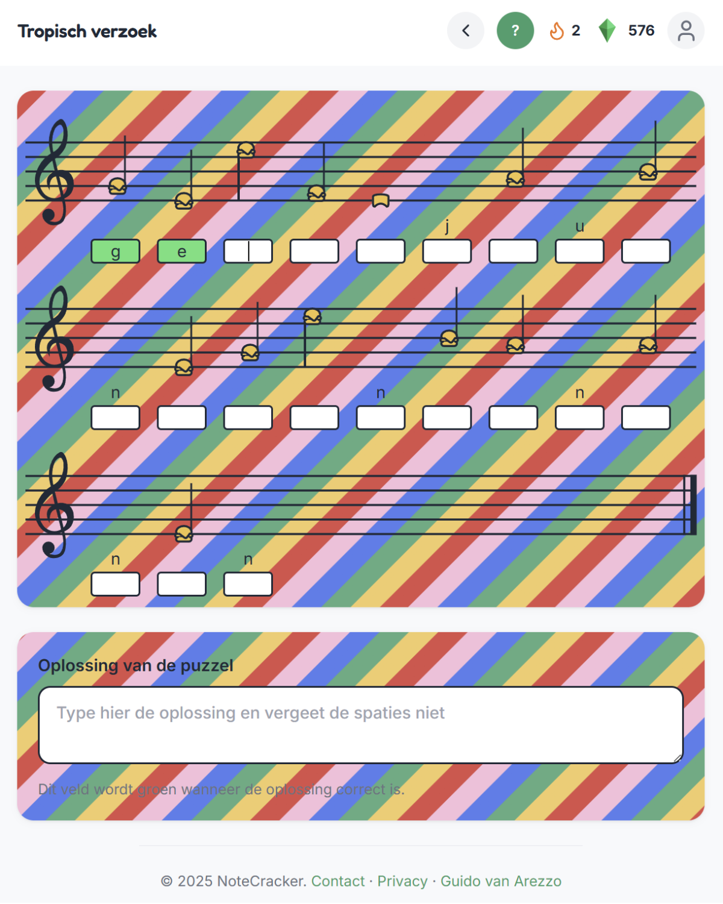
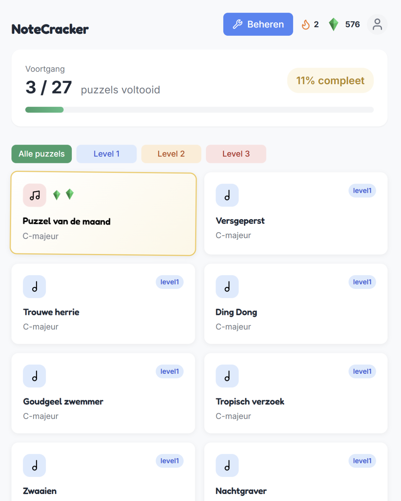
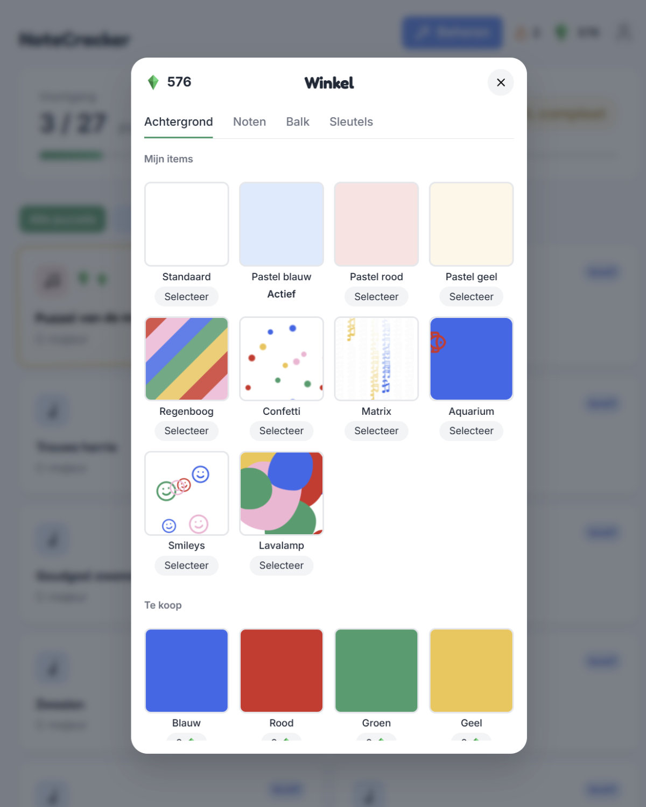
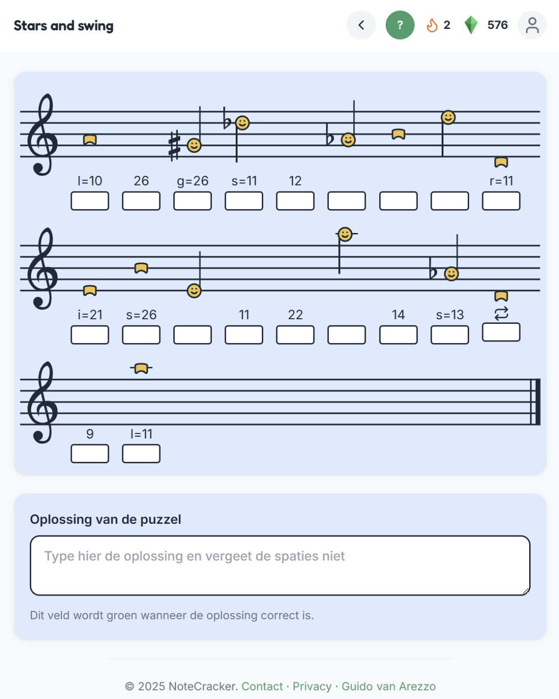
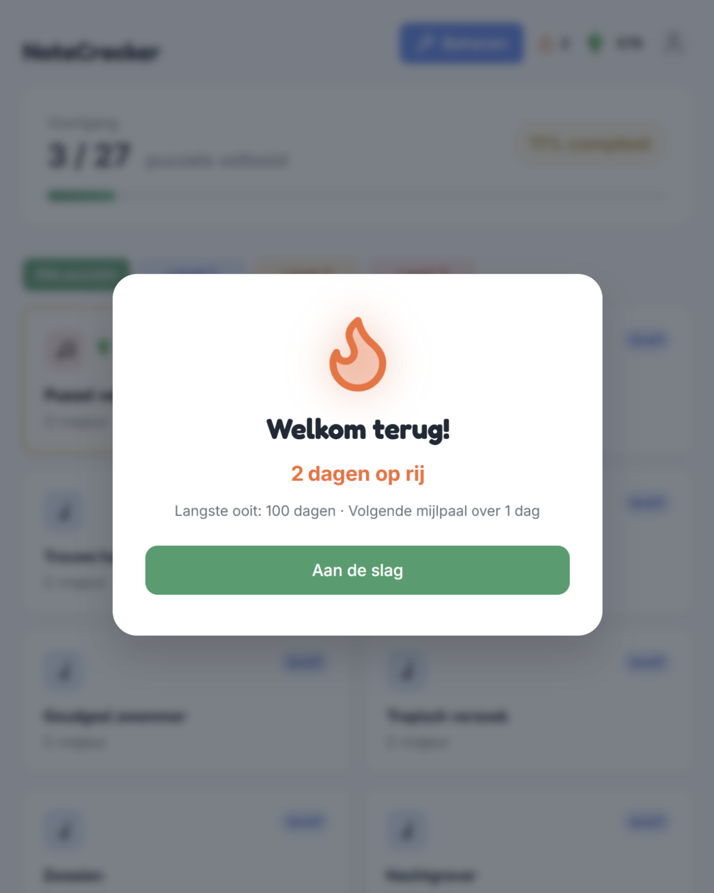
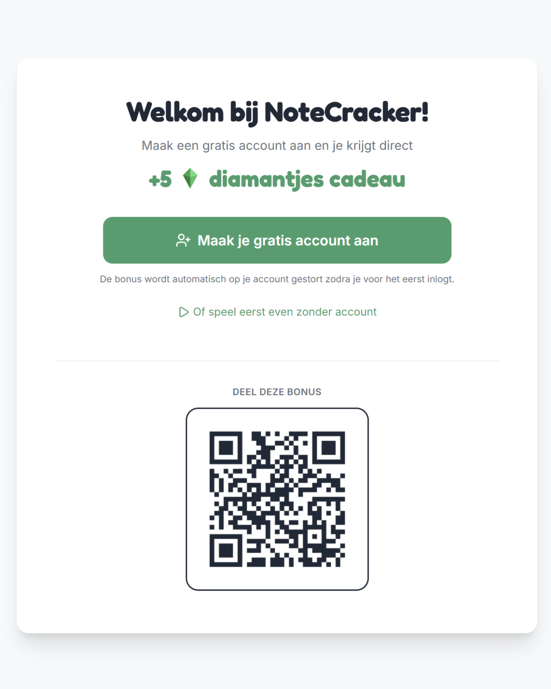

NoteCracker
De laatste tijd lees ik zoveel over verslavende apps met microtransacties en hoe slecht dat allemaal is. Maar het eerste wat ik dan altijd denk is: hoe draai je dat nou eens om?

Op dit moment bouw ik NoteCracker, een maatwerk webapp voor muziekeducatie waarmee je op een leuke manier muzieknoten leert lezen door puzzels op te lossen. Denk aan Duolingo, maar dan voor muzieknoten leren lezen.
Je verdient diamantjes door puzzels op te lossen, en daarmee pimp je je eigen notenbalk, noten en achtergronden. Er zijn dagelijkse streaks die je motiveren om elke dag héél even te oefenen, niet om uren te scrollen.
Leren moet leuk zijn, en daarvoor kijk ik juist naar al die verslavende spelletjes als inspiratie. Eigenlijk is het net Star Wars: diezelfde Force kun je voor de dark side gebruiken, of voor de good side. Ik kies voor de good side. (Geldt trouwens ook voor AI...)
Heb jij nou ook behoefte aan een educatief dopamine shotje? Check dan mijn gratis webapp. Trouwens, had ik al verteld dat je via deze link 5 extra diamantjes kan verdienen als je je aanmeldt? Wie weet heb jij straks wel bananen noten met een regenboog achtergrond.





Projectinformatie
- Opdrachtgever
- Frans van Liebergen
- Categorie
- Muzikale webapps & games
- Projecttype
- Webapp voor muziekeducatie, muzieknoten leren lezen
- Studio Wotto verzorgde
- Concept, ontwerp en ontwikkeling
- Platform
- Gratis webapp, crackthenotes.com
- Status
- In ontwikkeling
- Toepassing
- Muziekonderwijs en thuis oefenen
- Gerelateerde diensten
- Muzikale webapps, gamification, muziekeducatie